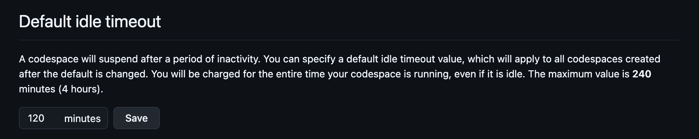
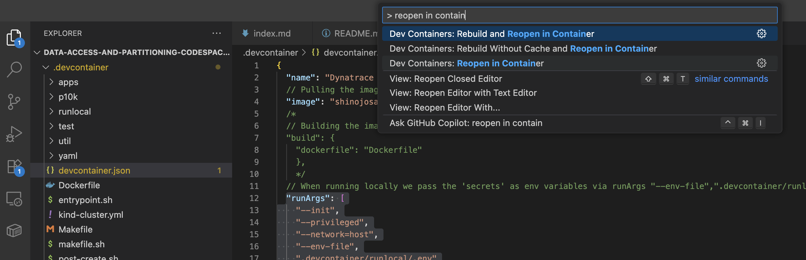
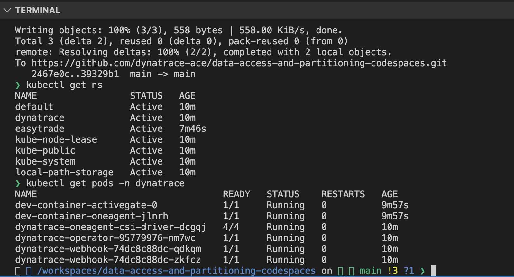
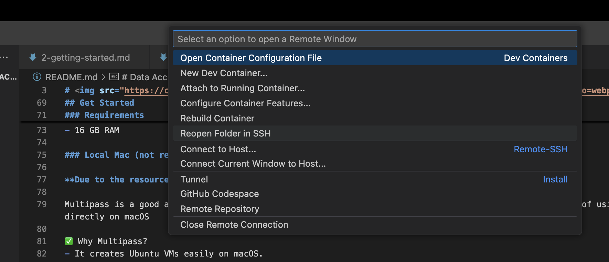

K. Develop
🧪 Develop#
You can run the lab in different ways: 1. Codespaces 2. Ubuntu VM 3. Local Mac
Codespaces#
It will be the easiest way to setup, but consider the following: - GitHub Free (personal accounts): 120 core hours per month (≈ 60 hours on a 2-core machine), 15 GB storage per month - By default, a codespace stops after 30 minutes of inactivity. - What Happens When You Hit the Limit? You cannot create or open new codespaces unless you set up a spending limit and payment method, Quotas reset monthly.
Important After finishing your lab, we recommend you to delete the codespace, so you don't run out of quotas and you can try it again if you need to!
- Increase the idle time to 120 minutes, just to ensure your lab doesn't get deleted

- Create codespaces with options

-
Configure and run
-
Delete codespace to save quotas
Ubuntu VM#
Deploy#
- Clone repo
git clone git clone https://github.com/dynatrace-ace/data-access-and-partitioning-codespaces.git
- add
.envfile within/runlocalfolder
~/data-access-and-partitioning-codespaces/.devcontainer/runlocal/.env
- For local, modify devcontainer.json to
"runArgs": [
"--init",
"--privileged",
"--network=host",
"--env-file",
".devcontainer/runlocal/.env"
],
Note: don't push the changes, github codespaces doesn't need "--env-file" and ".devcontainer/runlocal/.env". This is just when you're running local
- Install docker
sudo apt-get update
sudo apt-get install -y ca-certificates curl gnupg
sudo install -m 0755 -d /etc/apt/keyrings
curl -fsSL https://download.docker.com/linux/ubuntu/gpg | sudo gpg --dearmor -o /etc/apt/keyrings/docker.gpg
echo \
"deb [arch=$(dpkg --print-architecture) signed-by=/etc/apt/keyrings/docker.gpg] \
https://download.docker.com/linux/ubuntu $(. /etc/os-release && echo "$VERSION_CODENAME") stable" \
| sudo tee /etc/apt/sources.list.d/docker.list >/dev/null
sudo apt-get update
sudo apt-get install -y docker-ce docker-ce-cli containerd.io docker-buildx-plugin docker-compose-plugin
sudo systemctl enable --now docker
sudo usermod -aG docker $USER
newgrp docker
cd ~/data-access-and-partitioning-codespaces, then runcode .. This will open a separate tab and recognize the Dev Container

- Reopen in container

- Well done, now you're within the devcontainer and you can start your lab

Exit devcontainer#
- To exit devcontainer and go back to your VM, click on the bottom left green label

- Reopen folder in SSH

- Check your devcontainers from the outside with docker ps
Enter existing devcontainer#
- Attach running container

- Select data-access-partitioning container

Destroy#
-
Check existing docker ps running docker ps
-
Docker stop
Note: to deploy again, remember step "Reopen in container"
- Force full deletion with
kind delete cluster docker volume rm $(docker volume ls -q | grep kind)
Local Mac (not recommended)#
Due to the resources needed for the lab to run, it is recommended to use codespaces or a separate VM
Multipass is a good alternative if you want to run the Codespaces Framework in a lightweight VM instead of using Docker directly on macOS
✅ Why Multipass? - It creates Ubuntu VMs easily on macOS. - Useful if you want an environment closer to Linux (like Codespaces). - Avoids conflicts with macOS dependencies.
-
Install Multipass brew install --cask multipass
-
Launch a VM multipass launch --name codespaces --memory 4G --disk 20G
-
Access the VM multipass shell codespaces
-
Install Docker & Git inside VM
-
Clone the repo git clone https://github.com/dynatrace-ace/data-access-and-partitioning-codespaces.git
-
Run Dev Container
Deploy Monaco#
/workspaces/data-access-and-partitioning-codespaces && .devcontainer/monaco.sh